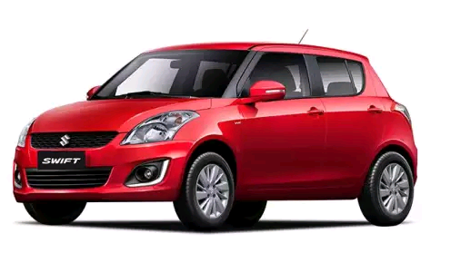
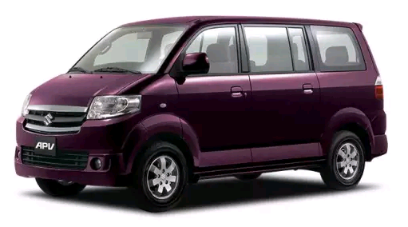

Categories
Here’s a list of our top 5 Suzuki Cars
Suzuki may not be as big of as a household name as Toyota and Mitsubishi–two of its fellow Japanese car manufacturers–but that’s not to say they make less superior cars. Known for compact cars and SUVs, durability is another thing that the Suzuki name is popular for. New or used, Suzuki cars are an excellent choice for car buyers, and you won’t have to worry about plummeting values or parts supply for years to come. If you’re interested in buying a Suzuki, Carmudi lists down its top five recommendations.
Grand VitaraSuzuki’s cheap and cheerful little off-roader has certainly evolved into a well-equipped and tidy vehicle package that belongs on the higher rungs of its class. That’s not to say that the Vitara has become less affordable. Priced at around half of what most SUVs cost these days, you still get a comfortable and exciting SUV that’s roomy enough for a family of seven. |
|---|

Swift 1.2Squint your eyes and you might mistake the Suzuki Swift for a Mini Cooper . That’s because the vehicle takes its inspiration from the British legend, as Suzuki unabashedly admits. But more than just a pale imitation, the Swift can more than stand on its own. Smart looks, spacious cabin, a vibrant drive, and good equipment package, this Suzuki supermini is an instantly likable everyday performer. |
|---|
APVIf you long for a time when vehicles weren’t that complicated, consider the APV as your ride back in time. Driving a van that acts like a van and is free of frills can be liberating in a sense, and the APV navigates these purposes with ease. Thanks to its height and narrowness, outward visibility and maneuverability are the APV’s best friends. No van at this price point is easier to see out of and park, making the APV the most urban-friendly in its segment. |
|---|
Alto 800A low price tag and running costs have helped propel the Alto to become India’s best selling car for the last 13 years. Economical and fuel-efficient, there’s very little that a cash-strapped first-car buyer can ask for in the cheapest car in Suzuki’s lineup. |
|---|
CiazIf you want a compact sedan that can give the ubiquitous Toyota Vios a run for its money, the Suzuki Ciaz makes a strong case. Though there’s nothing in the car that screams ‘innovative,’ that’s not necessarily a bad thing. For sure, the Ciaz is enough to satisfy the needs of most car drivers looking for an unassuming yet reliable daily ride. |
|---|
 Honda
Honda Ford
Ford Suzuki
Suzuki Lamborghini
Lamborghini Lexus
Lexus Jaguar
Jaguar BMW
BMW GMC
GMC Mercedes-Benz
Mercedes-Benz